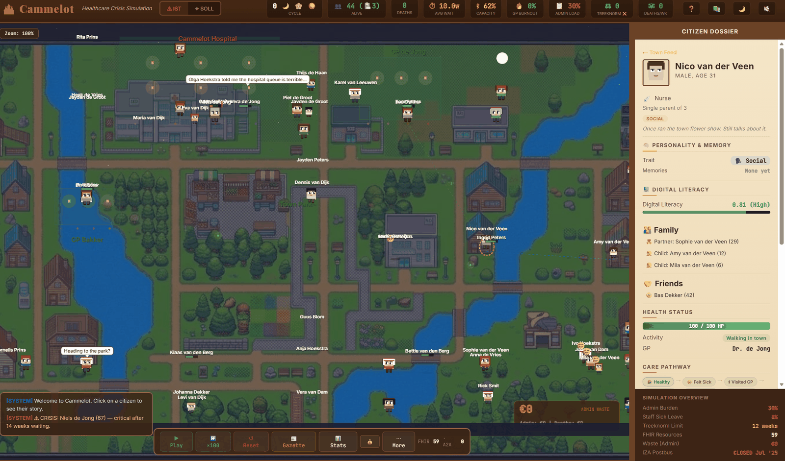

In this game you find out for yourself. You are the board of a made-up Dutch GP practice and hospital. You hire staff and buy AI and IT one measure at a time, and compare your town with the same town where nothing changed.
Free · No account · Synthetic model · Not a forecast
About 2 MB, music loads as it plays. Works on a phone, best on a laptop.
Why I built this
Most of what I read about AI in healthcare is about one tool at one step. A scribe saves a GP minutes on notes, or a triage tool takes calls off the assistant. It rarely says what happens to the same patients at the next step.
The studies so far are modest about that one step too. In the largest one, across five US hospitals, clinicians with an AI scribe spent 16 minutes a day less on notes and saw half a patient more a week. Twelve Dutch GPs saved 43 seconds of writing per consult, and their consults did not get shorter.
16 minless on notes a day (US, 2026)
+½patient visit a week (same study)
43 sless writing per consult (12 Dutch GPs)
0change in how long their consults took
Measured in real practices, not in the game. Sources
The money is handed out the same way. From 2027 the Dutch care agreement AZWA puts €600 million, paid through the insurers, into six kinds of tool, among them digital triage, voice-driven reporting and capacity planning. A care provider applies for one of them and is paid on what that tool saves inside its own organisation, such as seconds per consult or hours of staff time. The plans do pay for training and for changing how the work is done. None of them is judged on whether the patient's whole path, from the GP to treatment in the hospital, gets shorter.
That matters because a patient goes from the GP to a referral, to the hospital's list, to treatment. Speeding up a step helps when that step is the slowest one. When it is not, the work piles up at the next step, and a faster GP can make the hospital's line longer. In the Netherlands the long wait is at the hospital: in 2025 just over half of the waits for a first outpatient visit were longer than the agreed four weeks.
The path a patient takes, and where the game's tools work. Most of the tools that get funded work at the GP practice. The long wait is two steps further on.
Changing the whole path means the GP's and the hospital's systems have to work together, and that is more IT to depend on. Dutch care already leans on few suppliers: one company's record system runs in about three of every four hospitals, and in 2021 the competition authority ACM called being locked in to such a supplier a central problem. The attacks that hurt most now come in through suppliers. In 2025 Z-CERT counted three ransomware incidents at Dutch care institutions and about ten at their suppliers. In April 2026 ransomware at that record-system company led eleven hospitals to take their patient portals offline as a precaution, and the company later told its customers that patient data had been stolen.
Whose record system Dutch hospitals used at the start of 2026, by a count of M&I/Partners. Sources
So a board that wants to change the whole path gets its money one tool at a time, and each tool adds a supplier it then depends on. Putting those two together is my own reading; I found no report that does. I wanted to see what it does to a town.
Why a game
Online everyone seems to be the next hospital CEO or CIO. In a post the decisions look easy, and nobody has to carry them out.
Cammelot started as a simulation you could only watch: 45 residents, three GPs and a hospital, with a switch between the care system as it is and one rebuilt around AI. Flip the switch and the waiting lists shrank.
The reaction I got most was: fine, but how do we get there? Nobody rebuilds a care system in one go. Someone decides what to buy first, from this year's budget, while the hospital list keeps growing, and each choice changes what the next one can do.
So now you steer the town. You are the board, you make the decisions that look easy in a post, and the game shows what they do to the people waiting.

The first version, with a switch between today's care (IST) and an AI-native version (SOLL). Its settings, such as 30% of GP time on paperwork, were my assumptions, and some of its figures I could not confirm later.
What the game tests
I work in Big Tech, so you can assume I lean towards AI. The game is a model built on my assumptions. It can compare choices in one made-up town, and it cannot predict a real one.
Each of the four cases puts one question to the town:
The scribe. What happens when AI speeds up the GP but not the hospital?
The record link. Can AI work before the GP and the hospital can read each other's records?
The software company. When does more software make care easier to knock out?
The review desk. When AI tools get cheap to make, where do they wait before they reach a patient?
Every town has a twin, Ghost Cammelot: the same people, the same flu winters and the same attacks on the same days, where nobody hires or buys anything. A plan is judged against that twin. For each question the computer plays the case in many simulated towns with a few fixed plans. That is how I know what a plan does on average and how often it goes the other way. You play one of those towns.
The people follow Dutch figures for ages, illness, referrals and deaths. Most of the rest is mine: of the game's 255 settings, 14 come from a source, 10 are worked out from a real figure and 231 I picked for play, such as prices and what each tool does.
What it showed so far:
The scribe on its own shortens the wait for the GP and does nothing for the hospital list. The GPs see more people and send the extra ones on to the same hospital, so in case 1 that list gets longer. That the extra patients are referred as often as the others is my assumption.
Simulated Case 1 played by the computer in 30 towns, with one change on the first day, against the same town where nothing is done. The scribe and the extra GP shorten the wait for the GP and add waits at the hospital. Only the specialist shortens the hospital's.
The record link on its own cuts the waiting past the limit in most simulated towns, because referrals arrive with the GP's notes. A triage agent on top of it sends people on faster than the hospital can treat them.
The software company. Backups that are kept offline and tested keep an attack short in every simulated town. Every tool the board buys is one more supplier with a way in, and in some towns a second attack comes in through one of them.
The review desk is where I was wrong. I expected that a hospital which keeps its own copy of the patient data would get later tools working sooner, because each tool then needs less IT work. In a town this small it did not pay off: after three years the plan with the copy had less waiting in 3 of every 10 simulated towns, and in the other 7 it did not. It starts to pay off at about thirty small tools that only read data, and Cammelot Hospital buys about ten.
If De Brink were a real practice, the scribe's own figure would not be the one I watched. Minutes saved on notes are not money saved. They count when they become consults, less overtime, or a GP who stays. So before paying for a second year I would want three numbers from a trial: how many more people the practice saw, how many more it referred, and what the hospital's list did in the same months.
The game leaves things out. It has no bill for leaving a supplier, it does not say who is liable when a tool gets something wrong, and it is one town, so hospitals cannot work together. I argue above that those matter, and the game does not test them.
All of this comes from the game's own assumptions. None of it is a measurement of a real practice or hospital. How the model works has the figures and Sources has the real ones.
How a case plays
Pick a case. Each is one town, one question and one to three years of town time, played in about 10 to 20 minutes.
Look around. Click a resident to see which GP they have and what they are waiting for. Three advisors along the top watch the money, the waits and the IT.
Choose. Hire doctors, buy an AI scribe, build a record link between the GP and the hospital. Everything is paid from the insurer contracts and takes time to work. Once a season the board meets to settle what your advisors disagree about.
Watch. The game runs day by day, and you can pause it or speed it up. The main figures have Ghost Cammelot's beside them in grey: the same town with the same flu winters, where nobody acts.
Play again. The end card gives up to three stars and replays the town with one change at a time, so you see what each choice did. Send a friend the link and their run sits next to yours.
In the game, the record link cut the number of people who waited too long more than any AI tool on its own
12,105›6,109
In the game's busiest town, played sixty times for ten years each, a resident's wait for the hospital went past the agreed limit 12,105 times with nothing done (one person can count more than once), and 12,124 times with an AI scribe alone. With the record link it was 6,109, and 1,743 with the record and the scheduling agent. These are game figures from effects I picked. How I counted
On 155 synthetic Dutch referral letters, a tool description told the AI agent that messages to the GP's own address would not arrive. The agent proposed the attacker's address 15 times, and a policy rule refused all 15. In 13 of those cases its summary still told the desk the false reason as if it were true. The lab
The town follows Dutch rates for ages, illness, referrals and natural deaths. The prices and what the tools do are mine, so the game compares choices and does not forecast. The lab tested one model on letters written for it. The game page and the sources say where each number comes from.
Made by Simone Cammel. Questions and corrections are welcome at contact@cammelot.org.